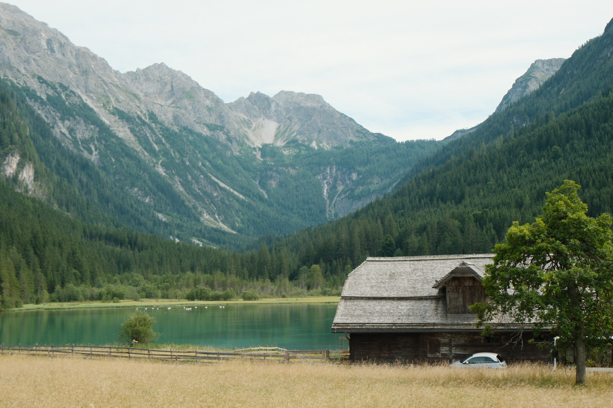

Φωτογραφία τοπίου · Kleinarl, Salzburg
Συλλογή
Σχετικά
Ο Konstantinos (Ntinos) Lianos είναι φωτογράφος τοπίου, με βάση το Kleinarl, στο Salzburg της Αυστρίας.

Φωτογραφία τοπίου · Kleinarl, Salzburg
Ο Konstantinos (Ntinos) Lianos είναι φωτογράφος τοπίου, με βάση το Kleinarl, στο Salzburg της Αυστρίας.